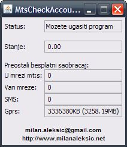

ZTE MF622 3Г Модем - mt:s MtsCheckAccount v0.2.1
Историја измена?
0.2.1.1 - преправљен проблем са конфигурацијом
0.2.1 - програм прилагођен новом интерфејсу mt:s-a за рад са postpaid рачунима (сада је интерактивни мени уместо простог одговора)
0.2 - Groovy, GUI, аутор претрага за портом, конфигурациони XML
0.1 - иницијална верзија (само за моју употребу) - једноставна конзолна Јава апликација
Шта је овај програм?
Једноставан програмчић за проверу статња на мт:с провајдеру, за USB 3Г модем ZTE MF-622.
Нисам имао прилике да испробам програм на другим модемима, могуће је да ће радити на било којем
модему у понуди мт:с-а, али - не смем да гарантујем :)
Програм не злоупотребљава Ваше поверење или троши паре са вашег рачуна или било шта налик томе.
Програмчић је заправо мали скуп команди које се рутирају ка модему и издваја се само одређени део одговора.
Да би ово могао да изведе, програм ће пре тога приступити одређеним подешавањима вашег рачунара.
MtsCheckAccount програм ништа неће записивати или мењати у Вашем рачунару.
Како изгледа испис програма?
Битна разлика између верзије 0.1 и 0.2 је та што се сада приказ тренутно стања врши унутар форме, а не у конзоли:

Услови за покретање
Да би програм могао уопште радити, морају бити испуњена 2 услова:
- модем не сме бити активан, тј. не смете бити закачени на Интернет кроз ZTE модем (пошто не могу два
програма користити модем на нивоу серијског порта),
- програм је написан у дијалекту Јаве (прецизније, у језику Groovy који користи Јавину виртуелну машину),
тако да је неопходно да поседујете Јаву (Java SE Runtime Environment,
не JDK)
да бисте могли да покренете програм. Верзија коју морате имати
јесте 1.6 или новија. Уколико немате Јаву, скините је са
ове локације.
Мануелно постављање порта
Када се програм стартује, покушава да сазна где би требало да се налази модем.
Уколико не може да дође до те информације, питаће Вас где се исти налази. Назив порта можете наћи на наредном месту (WinXP):
Start -> Control Panel -> System -> Hardware -> Device Manager -> Modems ->
ZTE Proprietary USB Modem -> Properties... -> Advanced -> Advanced Port Settings -> COM Port number
Е сада, код мене у том пољу стоји COM7, али код Вас то можда и није. Немојте да мењате вредност коју видите на том месту,
већ је само унесите када Вас програм буде упитао за исту. Уколико изаберете 'Cancel' када Вас програм пита за порт,
биће употребљен подразумевани, COM7, који можете променити променом конфигурације (config.xml фајл).
Грешка "Windows cannot find 'javaw'. Make sure you typed the name correctly..."
Уколико сте приликом покретања програма добили грешку која почиње са претходним текстом,
то значи да, иако је можда Јава успешно инсталирана, није у системском "path"-у. Ако желите да исправите овај проблем,
то можете урадити веома једноставно, из неколико корака:
- Пронађите где је Јава инсталирана. Обично је та локација налик наредној:
c:\Program Files\Java\jre6\bin\javaw.exe
- На месту где сте инсталирали програм MtsCheckAccount ћете пронаћи фајл
bin\.launcher
- Отворите га у програму Notepad и пронађите линију (требало би да је прва)
executor=javaw
- Преправите је тако да буде налик наредној:
executor=c:\Program Files\Java\jre6\bin\javaw.exe
Немогућност конекције на Интернет након употребе програма MtsCheckAccount
Као спорадичан ефекат провере стања на Вашем mt:s рачуну, а као последица привременог преузимања контроле
над модемом, програм који сте добили уз модем "MODEM Mobile Connection" неће бити у стању да се закачи на Интернет, већ га морате
рестартовати (само га искључите и укључите). Да би сте избегли ову неугодну ситуацију, препоручујем да угасите "MODEM Mobile Connection"
пре употребе MtsCheckAccount.
Пријава проблема при раду програма
Уколико програм не приказује тачне податке (или не показује ништа), и желите да пријавите то да бисте помогли
(и омогућили исправку те грешке), то можете урадити на наредни начин:
- Пронађите место где сте инсталирали програм (обично C:\Program Files\MtsCheckAccount)
- Уђите у поддиректоријум "bin"
- Отворите .launcher фајл
- Измените наредну линију, из:
debug=false
У:
debug=true
- Покрените програм и након што он заврши са радом преузмите фајлове stdout.log и stderr.log и пошаљите ми их на email.